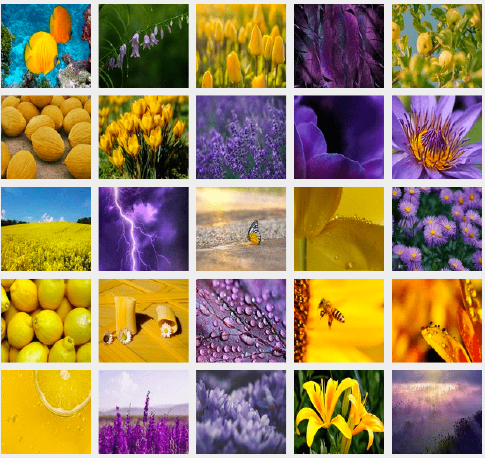

Maintenance
Description généraliste
Ce projet a été réalisé au début de mes études d’informatique, je ne maitrisais pas encore toutes les techniques et je ne possédais pas toutes les compétences nécessaires afin de réaliser un code lisible et propre. J’ai donc voulu dans un premier temps notamment en remplaçant des interminables copier/coller de code par des boucles for.
Dans un deuxième temps, je voulais ajouter une fonctionnalité supplémentaire dans ce jeu. En effet, le jeu du memory est un jeu que j’affectionne particulièrement car il a été très présent dans mon enfance. Je voulais garder l’aspect initial de ce jeu, c’est à dire, travailler et entraîner sa mémoire, c’est pour cela que j’ai voulu revisiter un autre jeu, le Lynx, qui a pour but de retrouver le plus vite possible une image, piochée au préalable, dans un plateau composé d’environ 400 autres images.
Dans ma version, le joueur voit apparaître 3 images, une fois qu’il les a mémorisées, une grille d’images s’affiche et il doit retrouver les 3 images vues précédemment, le plus vite possible.
Description gameplay
Ce nouveau mode de jeu rejoint les principes initiaux du projet, c’est à dire, qu’il a été codé en suivant le modèle MVC et en Java et JavaSwing. Il présente une interface composée d'une grille de 25 JButton associés respectivement à leur propre image. A chaque nouvelle partie, les images sont mélangées et associées à un bouton.
Pour démarrer la partie ainsi que le chrono, il suffit de presser n’importe quel bouton sur la grille. Une fenêtre pop-up apparaît et permet au joueur de voir les 3 images à trouver. Ensuite, le joueur clique sur un des boutons de la grille. si l’image qui apparaît est une des 3 à trouver, le bouton se désactive, c’est à dire qu’il n’est plus possible de cliquer dessus. Une fois les 3 images trouvées, le chrono s’arrête et une nouvelle fenêtre pop-up s’affiche, signifiant au joueur qu’il a gagné.
Veille technologique
Choix technologiques
Dans ce projet, j’ai choisi d’utiliser la bibliothèque JavaSwing, dévelopée par Oracle. En effet, Java étant un langage que je connaissais, que je maîtrisais le mieux et qui permettait le développement de logiciel, je voulais l’utiliser dans ce projet. Dans le cadre de mes études, j’utilisais principalement Java pour mettre en place des algorithmes; utiliser une interface graphique avec celui-ci était une nouveauté intéressante à explorer.
JavaSwing utilise le principe MVC ce qui correspondait à mes attentes. De plus, JavaSwing est assez simple à comprendre lorsqu’on débute; que ce soit au niveau de l’importation ou de l’utilisation de la bibliothèque. Il existe de nombreux exemples sur internet qui permettent d’apprendre les bases très rapidement.
Alternatives possibles
En ce qui concerne les alternatives possibles, il existe deux autres bibliothèques de gestion de fenêtre : AWT et JavaFX.
AWT
AWT est une bibliothèque qui a été introduite dès les premières versions de Java. Toutefois, depuis Java 2 et jusqu’à Java8, c’est la bibliothèque Java Swing qui est devenue la bibliothèque de gestion de fenêtre officielle.
Les composants de Java AWT sont beaucoup plus lourds que ceux de Java Swing. De plus, les fonctionnalités de AWT sont moins nombreuses et possèdent un temps d'exécution plus long que celles de Swing. Enfin, le modèle MVC n'est pas pris en compte par AWT, ce qui n'est pas un bon point pour celui-ci car à l'heure actuelle, c'est le principe MVC qui est le plus utilisé et qui permet d'écrire un code plus lisible.
JavaFX
JavaFX est un framework et une bibliothèque d'interface utilisateur issue du projet OpenJFX. La bibliothèque JavaFX est devenue la bibliothèque de gestion de fenêtre officielle dès l’apparition de Java8. Je comptais utiliser cette bibliothèque dans un prochain projet qui demandait plus de ressources et qui avait une envergure plus grande; la programmation d’un jeu vidéo Pacman avec la mise en place d’IA pour les fantômes et la génération d’un labyrinthe aléatoire.
En effet, JavaFX est assez compliqué à installer directement sur sa machine tandis qu’avec une ligne dans le code, l’importation est faite pour JavaSwing. Toutefois, JavaFX permet de réaliser des projets plus importants et possède une grande communauté. De plus, la bibliothèque JavaFX est régulièrement mise à jour et un logiciel, Scene Builder, a vu le jour afin de pouvoir créer des interfaces utilisateurs sans coder et qui permet par la suite, de proposer les fichiers FXML correspondant aux interfaces créées.
JavaFX est à l’heure actuelle très utilisé, mais sachant que j’allais l’utiliser dans le futur, je souhaitais également découvrir son prédécesseur, afin de pouvoir comprendre les améliorations qui ont été mise en place dans JavaFX et d’avoir déjà, un premier aperçu de la réalisation d’interface graphique avec JavaSwing.